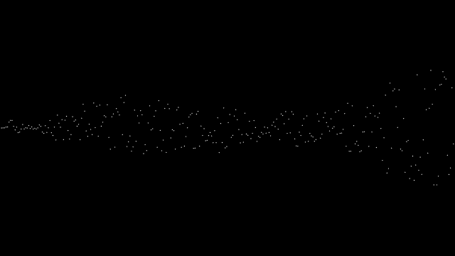

ランダムを扱う
この節では、ゲームによく出てくるランダムについて学ぶ。
そもそもランダムとは
事象の発生に法則性（規則性）がなく、予測が不可能な状態 -Wikipediaより
Processingでは、引用にあるように予測が不可能2な小数を生成することができる機能がある。
使い方
使い方は、random()を使う。
random([最大値]);//0~最大値の範囲で生成
random([最小値],[最大値]);//最小値~最大値の範囲で生成
↓ランダムを使用した例

ノイズ1
Processingには、ランダム以外にもnoise()という、random()で生成するよりも連続的な変化をする数値を出力するものがある。
noise([x座標]);//1次元ノイズ
noise([x座標],[y座標]);//2次元ノイズ
noise([x座標],[y座標],[z座標]);//3次元ノイズ
↓2次元ノイズの画像
1. ノイズの中でも2次元ノイズは、Minecraftなどのゲームの地形の生成に使用されている。 ↩
2. 実際は、乱数生成器というプログラムを利用しているため、プログラミングで使うランダムな値には周期性がある。ただ、周期があるとはいえ非常に長い周期なので、暗号を使いたいのでなければ気にする必要はない。 ↩